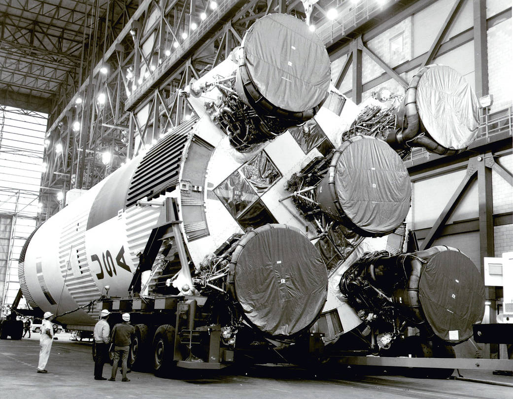
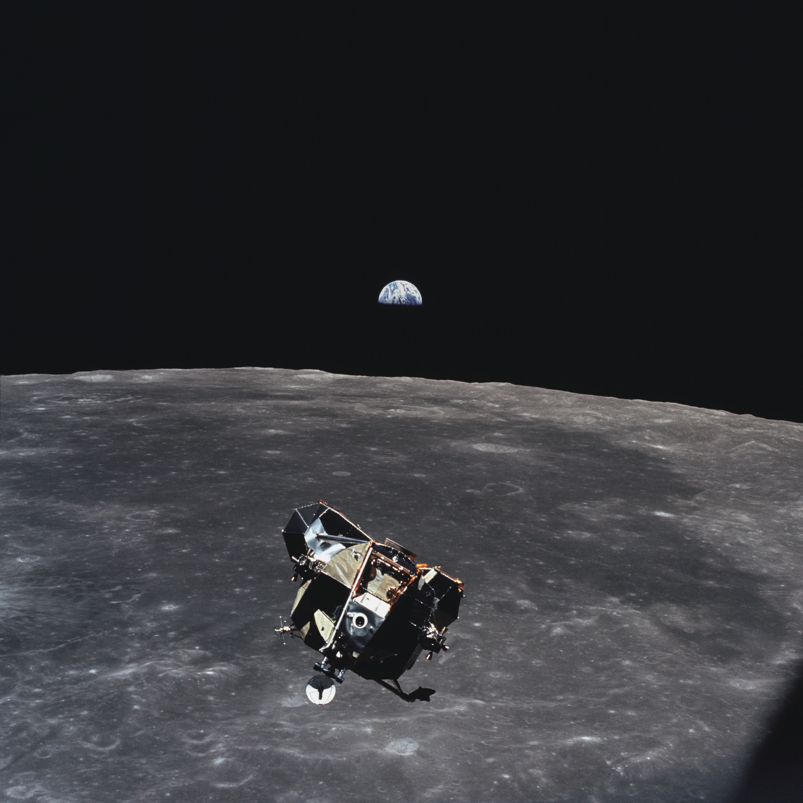
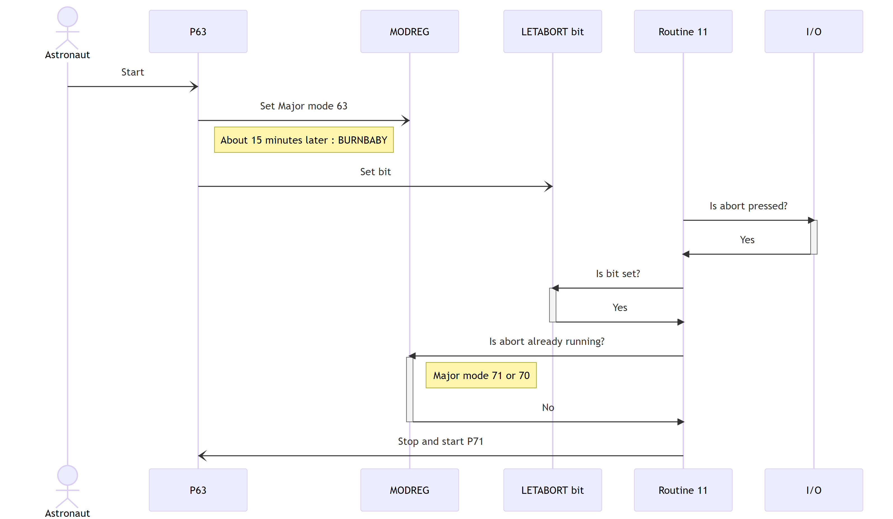
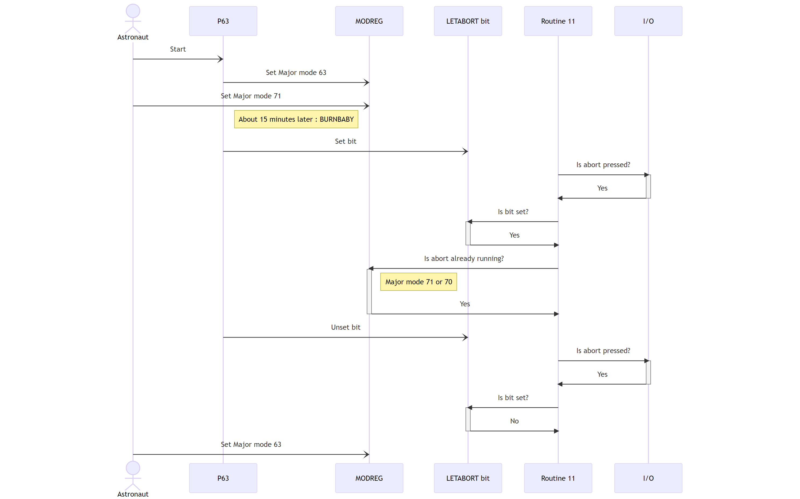
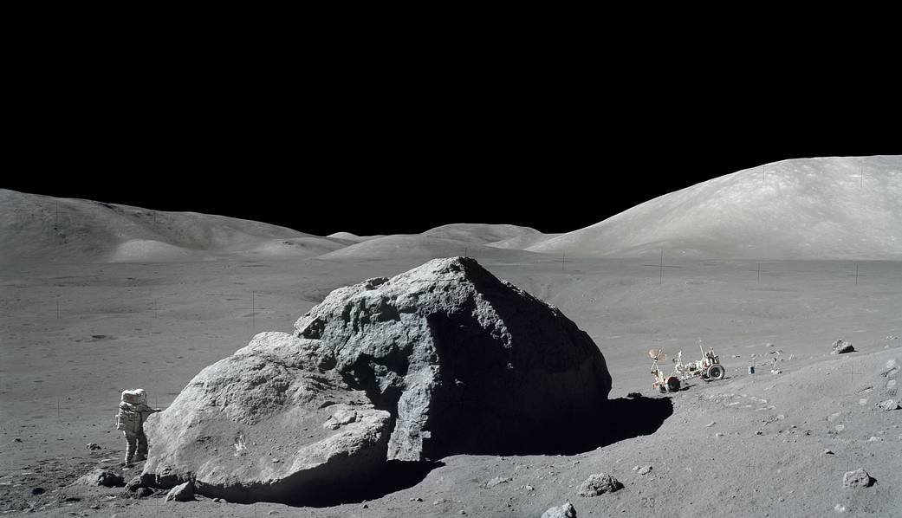
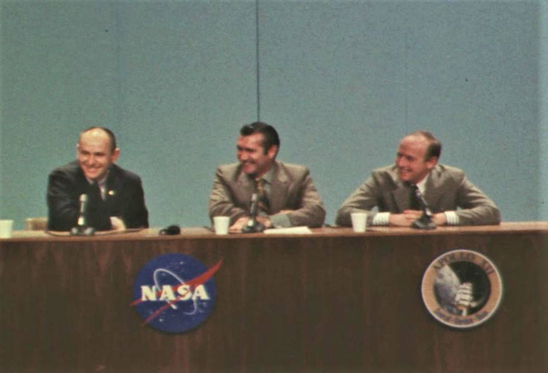

Program alarm
IT'S A TELWE O TWO

L'équipage

| 🚀 Romain Berthon | 🌖 Olivier Poncet | |
| @RomainTrm | @ponceto91 | |
| @ponceto91 | ||
| @ponceto91 |
Apollo 11 : "Twelve O two"
102:38:21 - Armstrong: "Sure do. Houston, you're looking at our Delta-H."
102:38:26 - Armstrong: "Program Alarm."
102:38:28 - Duke (CAPCOM): "It's looking good to us. Over."
102:38:30 - Armstrong: "It's a 1202."
102:38:32 - Aldrin: "1202."
102:38:42 - Armstrong: "Give us a reading on the 1202 Program Alarm."
102:38:53 - Duke (CAPCOM): "Roger. We got you; We're Go on that alarm."
Le hardware

Caractéristiques de l'AGC
- Fréquence principale de 2.048 MHz
- Largeur des registres de 16-bits
- Consommation de 55 Watts
- Dimensions de 61 cm × 32 cm × 17 cm
- Poids total de 32 Kg
La (r)évolution technologique
Quelle puissance ?


Le système d'entrées/sorties
Communiquer avec le monde extérieur

Le système

Multitâche coopératif
Cooperative multiprogramming
&
Preemptive multiprogramming
Exécuteur : le "light OS" de l'AGC
Ensemble de routines manageant les processus.
Des espaces de mémoire vive fixes et dédiés :
- Core Set table
- Wait list tables
- Vector Accumulator areas (VAC)
Le temps et les interruptions I/O synchrones
Le temps est un donnée critique dans une mission
- TIMER1 & 2 (scaled at 10ms) : elapsed time
Interruptions avec context switch
- TIMER3 (scaled at 10ms) : WAITLIST task scheduler
- TIMER4 (scaled at 10ms) : periodic checks (RCS, IMU, DAP, ...)
- TIMER5 (scaled at 100ms) : DAP
- TIMER6 (scaled at 0.625ms) : timer for RCS jets
Aparté : Les compteurs
Les interactions I/O ne sont pas toutes synchrones
Usage du "Cycle stealing" pour éviter le context switch

Gestion des erreurs
Certains processus peuvent :
- être redémarrés
- changer leurs paramètres de redémarrage
Logique de redémarrage :
- Group table & Restart table (fixed memory)
- Phase table (erasable memory)
Trois modes :
- Program abort: P00DOO
- Program abort: software restarts
- Rebooting: AGC "fresh start"
Interpréteur : la "VM" de l'AGC
Une nouvelle architecture CPU "logicielle"
Apporte des nouvelles capacités :
- doubles & triple précisions
- vecteurs
- matrices
- arithmétique
- trigonométrie
- ...
Le langage de haut niveau

Langage de haut niveau
\[x = {-b + \sqrt{b^2-4ac} \over 2a}\]

Les incidents notables

Apollo 11 : "Twelve O two"
102:38:21 - Armstrong: "Sure do. Houston, you're looking at our Delta-H."
102:38:26 - Armstrong: "Program Alarm."
102:38:28 - Duke (CAPCOM): "It's looking good to us. Over."
102:38:30 - Armstrong: "It's a 1202."
102:38:32 - Aldrin: "1202."
102:38:42 - Armstrong: "Give us a reading on the 1202 Program Alarm."
102:38:53 - Duke (CAPCOM): "Roger. We got you; We're Go on that alarm."
Apollo 11 : "Twelve O two"
Surcharge de travail & Executive Overflow

Apollo 14 : "We need to look at a bit here."
105:10:00 - Haise (CAPCOM): "Okay, Antares; Houston. We'd like you to back out of that 52.
We need to look at a bit here."
105:10:10 - Mitchell: "Roger. Do you have some PADs ready for me this pass, Fred?"
105:10:18 - Haise (CAPCOM): "Okay. They're coming up in a minute, Ed.
You ready to copy a couple of steps here?"
105:10:28 - Mitchell: "Yes. Go ahead."
105:10:29 - Haise (CAPCOM): "Okay. We'd like a Verb 11 Noun 10 Enter, 30 Enter."
105:10:40 - Mitchell: "You got it."
105:11:00 - Mitchell: "You read the DSKY, Houston?"
105:11:05 - Haise (CAPCOM): "Antares, Houston. What we're looking at there is the abort bit,
and it looks set."
Apollo 14 : "We need to look at a bit here."
- Routine 11 (toutes les 0.25s)
- LETABORT bit
- P63 & BURNBABY
- P70 & P71
- MODREG
Séquence normale
Le hack
Références

The Apollo Guidance Computer

Curious Marc
@curious_marc
CuriousMarc
Ken Shirriff's Blog
@kenshirriff
KenShirriff
The Virtual AGC Project
@virtualagc/virtualagc

Moonjs
@siravan/moonjs

The AGC Source Code
Original source code for the command and lunar modules
@chrislgarry/Apollo-11

Apollo in realtime

Apollo flight journal

Nasa Images
https://www.nasa.gov/mission_pages/apollo/images.html

Les figures de l'ombre

Merci
| 🚀 Romain Berthon | 🌖 Olivier Poncet | |
| @RomainTrm | @ponceto91 | |
| @ponceto91 | ||
| @ponceto91 |
Des questions ?
